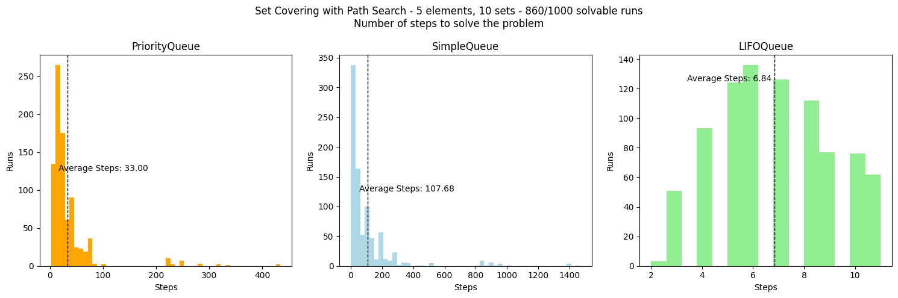

The files are in the set-covering-path-search folder. I tried to implement all the techniques learned.
For basic path search the results are in the set_covering_path_search_stats.ipynb file where I tried to implement it with different type of queues to evaluate and learn the difference between them. The main code is the following:
def solve(queuetype, steps, sets):
"""
Solve the Set Covering problem using different queuing strategies.
Args:
queuetype (str): The type of queue to use. Supported values are 'priority', 'simple', or 'lifo'.
steps (list): A list to store the number of iterations required to solve the problem.
sets (tuple): A collection of subsets for the Set Covering problem.
Returns:
None: The function updates the 'steps' list with the number of iterations needed.
"""
# Initialize the queue based on 'queuetype'
if queuetype == "priority":
frontier = PriorityQueue()
elif queuetype == "simple":
frontier = SimpleQueue()
elif queuetype == "lifo":
frontier = LifoQueue()
# Create the initial state representing an empty set of selected subsets
initial_state = State(set(), set(range(NUMBER_SET)))
frontier.put(initial_state)
counter = 0
while not frontier.empty():
counter += 1
# Get the current state from the queue
current_state = frontier.get()
# Check if the current state is a solution
if goal_check(current_state, sets):
steps.append(counter)
return
# Generate successor states by taking actions (adding subsets)
for action in current_state.not_taken:
new_state = State(
current_state.taken ^ {action}, current_state.not_taken ^ {action}
)
frontier.put(new_state)
# Update the steps list
steps.append(counter)
counter = 0
I the plotted the result for three queuing strategies evaluating the average number of steps for 1000 runs on a problem with 10 subsets and 5 elements:
With the Following results:

In the same folder in the files sc_ps_Astar.ipynb and sc_ps_Astar_stats I implemented A* search for the set covering problem. The learing of the topic is in the first file while different tests for the algorithm on differenft problem sizes are in the second. The main code is the following:
def cost(state):
"""The cost function calculates the cost of reaching a particular state"""
return len(state.taken)
def heuristic(state, sets):
"""Calculate the number of uncovered elements in U"""
uncovered = np.logical_not(
reduce(np.logical_or, [sets[i] for I in state.taken], np.zeros(PROBLEM_SIZE))
)
remaining_elements = np.sum(uncovered)
return remaining_elements
def astar(sets,steps):
# Initialize the priority queue with the initial state
initial_state = State(
taken=[],
cost=0,
heuristic=heuristic(State(taken=[], cost=0, heuristic=0), sets),
)
open_set = PriorityQueue()
open_set.put((initial_state.cost + initial_state.heuristic, initial_state))
# Initialize the closed set as an empty set
closed_set = set()
checked_states = 0
while not open_set.empty():
# Get the state with the lowest f score from the priority queue
_, current_state = open_set.get()
checked_states += 1
# If the current state is a goal state, return the solution
if goal_check(current_state, sets):
steps.append(checked_states)
return current_state.taken
# Add the current state to the closed set
closed_set.add(tuple(current_state.taken))
# Generate successor states by adding one more subset
for subset in range(NUMBER_SET):
if subset not in current_state.taken:
# Create a new state by adding the subset
new_taken = current_state.taken + [subset]
new_cost = cost(State(new_taken, 0, 0))
new_heuristic = heuristic(State(new_taken, 0, 0), sets)
new_state = State(new_taken, new_cost, new_heuristic)
# If the state is not in the closed set, add it to the open set
if tuple(new_taken) not in closed_set:
open_set.put((new_state.cost + new_state.heuristic, new_state))
# If the open set is empty and no solution is found, return None
return None
And the results:
Problem Size: 5 Number of sets: 10 Solvable runs: 88/100 Average number of checked states: 3.45 Problem Size: 20 Number of sets: 80 Solvable runs: 100/100 Average number of checked states: 4.26 Problem Size: 100 Number of sets: 1000 Solvable runs: 100/100 Average number of checked states: 5.99
In the folder set-covering-ss I implemented two single state methond to solve the same hill clambing problem as before, Hill Climbing and Simulated annealing.
The problem definition is the same as for path search, the code I develod is the following:
Helper functins and Heuristics
def covered(taken):
return np.sum(
reduce(np.logical_or, [SETS[i] for I in taken], np.zeros(PROBLEM_SIZE))
)
def overlap(taken):
# spots that are coveredby just one set in take list
matrix = np.stack([SETS[i] for I in taken], axis=-1)
return np.sum(np.sum(matrix, axis=1) > 1)
# heuristic functions
def h1(taken): # -> ended up using only h1
# number of spots covered by the union of the sets in state.taken
return covered(taken)
def h2(taken):
# number of spots covered / number of overlapping spots
c = covered(taken)
o = overlap(taken)
return c / o if o else c
# successor function
def successor(state):
return [
State(state.taken + [i], state.cost + 1, h1(state.taken + [i]))
for I in range(NUMBER_SET)
if I not in state.taken
]
Hill Climbing
def hill_climbing(init_state):
current = init_state
pb = tqdm()
while True:
neighbors = successor(current)
next = max(neighbors, key=lambda state: state.heuristic)
pb.update(1)
if (
goal_check(current)
or next.heuristic < current.heuristic
or len(current.taken) == NUMBER_SET
):
return current
current = next
With the following results:
PROBLEM_SIZE = 500 # dimension of the finite set U
NUMBER_SET = 1000 # number of subsets in the collection S
Found : State(taken=[177,810,477,442,615,142,95,185,0], cost=9,heuristic=500)
Is sol : True
Overlap : 439
Simulated Annealing
def simulated_annealing(init_state):
TEMP = 20
current = init_state
pb = tqdm()
while True:
pb.update(1)
if goal_check(current) or len(current.taken) == NUMBER_SET:
return current
neighbors = successor(current)
next = neighbors[np.random.randint(len(neighbors))]
deltaE = next.heuristic - current.heuristic
if deltaE > 0:
current = next
With the following results:
PROBLEM_SIZE = 500 # dimension of the finite set U
NUMBER_SET = 1000 # number of subsets in the collection S
Found : State(taken=[223, 53, 303, 384, 867, 167, 88, 753, 239, 944, 764, 192, 435, 128, 570, 78]
, cost=16, heuristic=500)
Is sol : True
Overlap : 488
In the folder evolutionary-algorithms I tried to learn the basics of evolutionary algorithms by solving different problems, after writing a short theory note ES.md.
In all of them I tried to implement and learn the basics of the algorithms while trying different heuristics for the population as well as different types of ES.
The list of problems was given by chatGPT asking for an increament in difficulty each time and is the following:
First one with a bit "cheaty" solution where mutation just flips a random bit to one with a certain probability.
mutated_child = "".join(
["1" if random.random() < mutation_rate else bit for bit in child]
)
new_population.append(mutated_child)
The second one is the knapsack problem where we have a set of items with a weight and a value and we want to maximize the value of the items we can put in a knapsack with a certain weight limit (Each item with just one copy).
The main takeaway from this problem was the use of different fitness functions.
The first one was just the sum of the values of the items in the knapsack and would set to 0 the fitness of a solution if it were to overshoot capacity, making the solution not take in cosideration for future evolution.
def fitness1(chromosome):
weight = 0
value = 0
for i, gene in enumerate(chromosome):
if gene == 1:
weight += all_items[i][0]
value += all_items[i][1]
if weight > BACKPACK_CAPACITY:
return 0
return value
The second one was the same but trying to give partial credits even to solution the slightly overfit capacity and gave much better results.
def fitness2(chromosome):
weight = 0
value = 0
for i, gene in enumerate(chromosome):
if gene == 1 :
weight += all_items[i][0]
value += all_items[i][1]
if weight > BACKPACK_CAPACITY:
return value/(weight-BACKPACK_CAPACITY)
return value
The TSP is a well-known NP-hard problem, and evolutionary algorithms offer a heuristic approach to finding good solutions when an exhaustive search is impractical for large instances.
The first step for this was using a distance matrix to represent the map.
def generate_distance_matrix(num_cities, seed=None):
if seed is not None:
random.seed(seed) # seed to reproduce res
# empty distance matrix filled with zeros
distance_matrix = [[0] * num_cities for _ in range(num_cities)]
# random city coordinates
city_coordinates = [
(random.uniform(0, 100), random.uniform(0, 100)) for _ in range(num_cities)
]
for i in range(num_cities):
for j in range(i + 1, num_cities):
x1, y1 = city_coordinates[i]
x2, y2 = city_coordinates[j]
distance = math.sqrt((x1 - x2) ** 2 + (y1 - y2) ** 2)
distance = int(distance)
# Populate both symmetric elements of the matrix
distance_matrix[i][j] = distance
distance_matrix[j][i] = distance
return distance_matri
And the fitness function was the sum of the distances between the cities in the order of the chromosome.
def fitness(tour, distance_matrix):
tour_distance = 0
num_cities = len(tour)
for i in range(num_cities):
from_city = tour[i]
to_city = tour[(i + 1) % num_cities]
tour_distance += distance_matrix[from_city][to_city]
return tour_distance
Parent selection was done using tournament selection and the new population is generated using only mutation where we swap two cities position in the cromosome (so swapping the visit order).
def reproduce(tournaments_winners):
new_population = []
for j in range(POPULATION_SIZE):
child = random.sample(tournaments_winners, 1)[0]
if random.random() < MUTATION_RATE:
# mutate by swapping two cities
swap_index1, swap_index2 = random.sample(range(NUMBER_CITIES), 2)
child[swap_index1], child[swap_index2] = (
child[swap_index2],
child[swap_index1],
)
new_population.append(child)
return new_population
This approach worked pretty well even with a large number of cities (1500).
Last problem in this section, "extends the classic Knapsack Problem by introducing multiple conflicting objectives to optimize simultaneously. This problem is of interest when you have several criteria to consider when selecting items for the knapsack, and these criteria may conflict with each other".
The problem was framed by ChatGPT in a very fun way:
MOKP - Robot Fleet You are in charge of selecting a team of robots for a space mission. You have a limited energy reserve on your spacecraft, and you need to decide which robots to take with you. Each robot has three attributes: energy consumption, repairability, and task completion time. - Energy Consumption (EC): The amount of energy a robot consumes during the mission. Lower values are preferred as they reduce the need for recharging or refueling. - Repairability (R): A measure of how easily a robot can be repaired if it malfunctions during the mission. Higher values indicate greater repairability. - Task Completion Time (TCT): The time it takes for a robot to complete its assigned tasks. Shorter task completion times are preferred for efficiency. You have a fixed energy reserve (C) for your spacecraft, and you want to maximize the following objectives: 1. Maximize the total repairability (sum of repairability values) of the selected robots. 2. Minimize the total energy consumption (sum of energy consumption values) of the selected robots. 3. Minimize the total task completion time (sum of task completion time values) of the selected robots. Formally, the Multi-Objective Knapsack Problem can be described as follows: - Given a set of n robots, each with attributes (EC_i, R_i, TCT_i), where i = 1 to n. - Given a spacecraft with a energy reserve (C). - Find a subset of robots to include in the mission that maximizes repairability, minimizes energy consumption, and minimizes task completion time, while ensuring that the total energy consumption (sum of EC_i) of the selected robots does not exceed the energy reserve (C).
The first step was to define the population, the robots are created as named tuples with the three attributes, and an invetory of robots is created with random values for each attribute. The population is the created as a set of binary genomes where each gene represents if a robot from inventory is taken to the ship or not.
# define named tuple for the robot
Robot = namedtuple("Robot", ["ec", "r", "tct"])
# build robots inventory
robots = [
Robot(
random.randint(1, MAX_EC),
random.randint(1, MAX_R),
random.randint(1, MAX_TCT),
)
for _ in range(NUMBER_ROBOT)
]
# initialize population -> genome is a list of 0 and 1 (genes) (0: robot not selected, 1: robot selected)
population = [
[random.randint(0, 1) for _ in range(NUMBER_ROBOT)] for _ in range(POPULATION_SIZE)
]
I then definied two fitness functions, the first one takes the sum of the attributes of the robots in the ship and returns 0 if the total energy overshoots capacity otherwise returns repairability/task completion time since we want to maximize the first and minimize the second.
The second one utilizes weights for each fo the attributes and returns 0 if we overshoot energy or the linear combinations of the weights and total attributes.
# min(sum(ec)), max(sum(r)), min(sum(tct)) while sum(ec) <= ENERGY_RESERVE
# maximize reliability and minimize time to task completion and total energy
# -> max(r/tct) while sum(ec) <= ENERGY_RESERVE
def fitness1(genome):
count = genome.count(1)
ec = 0
r = 0
tct = 0
for i, gene in enumerate(genome):
if gene == 1:
ec += robots[i].ec
r += robots[i].r
tct += robots[i].tct
# penalize if energy reserve is exceeded or genome is all 0
if ec > ENERGY_RESERVE or count == 0:
return 0
return r / tct
def fitness2(genome):
# linear combo of weights and vars -> set by trial and error
W_EC = -0.5
W_R = 0.3
W_TCT = -0.2
count = genome.count(1)
ec = 0
r = 0
tct = 0
for i, gene in enumerate(genome):
if gene == 1:
ec += robots[i].ec
r += robots[i].r
tct += robots[i].tct
fitness = W_EC * ec + W_R * r + W_TCT * tct
if ec > ENERGY_RESERVE or fitness <= 0:
return 0
return fitness
For offspring generation I implemented two different methods, the first one uses both recombination and mutation, the second one only mutation.
The mutation is a bit flip.
def reproduce1(parent1, parent2):
# recombination
child1 = parent1[: NUMBER_ROBOT // 2] + parent2[NUMBER_ROBOT // 2 :]
child2 = parent2[: NUMBER_ROBOT // 2] + parent1[NUMBER_ROBOT // 2 :]
# mutation
child1 = [1 - gene if random.random() < MUTATION_RATE else gene for gene in child1]
child2 = [
1 - gene if random.random() < MUTATION_RATE else gene for gene in child2
] # chance of mutation ie invert gene
return child1, child2
def reproduce2(parent1, parent2):
# mutation
child1 = [1 - gene if random.random() < MUTATION_RATE else gene for gene in parent1]
child2 = [
1 - gene if random.random() < MUTATION_RATE else gene for gene in parent2
] # chance of mutation ie invert gene
return child1, child2
I then run the problem for all combinations of the two fitnesses and the two reproduction methods:
fitness1 - reproduce1 Best solution: [0, 0, 0, 0, 0, 1, 0, 0, 0, 0, 0, 0, 0, 0, 0, 0, 0, 0, 0, 0] Total EC : 1 Mean R /100 : 48.0 Mean TCT /100: 1.0 fitness2 - reproduce1 Best solution: [0, 0, 0, 0, 0, 1, 0, 0, 0, 1, 0, 0, 0, 0, 0, 0, 1, 1, 0, 0] Total EC : 51 Mean R /100 : 69.75 Mean TCT /100: 14.0 fitness1 - reproduce2 Best solution: [0, 0, 0, 0, 0, 1, 0, 0, 0, 0, 0, 0, 0, 0, 0, 0, 0, 0, 0, 0] Total EC : 1 Mean R /100 : 48.0 Mean TCT /100: 1.0 fitness2 - reproduce2 Best solution: [0, 0, 0, 0, 0, 1, 0, 0, 0, 1, 0, 1, 0, 0, 0, 0, 1, 1, 0, 0] Total EC : 55 Mean R /100 : 70.0 Mean TCT /100: 15.4
Notably the first fitness functions ends up only choosing one single robot with the highest repairability and the lowest task completion time thus keeping total EC at a minimum, while the second one chooses a more balanced solution.
The folder lab1-set-covering-a-star contains the implementation of A* for the set covering problem.
The problem definition is the same as for path search, here I tried to implement various heuristic for the algorithm and compare them. The A* algorithm is a standard implementation using a heap queue for the frontier and a set for the closed set.
The diffent heuristics I tried are the following:
def TRIVIAL_heuristic(state, sets):
return 0
def MRSC_heuristic(state, sets):
"""
Minimum Remaining Set Coverage
This heuristic estimates the cost based on how many elements in "U" are still
uncovered and divides it by the number of subsets not taken. This heuristic
assumes that the subsets have an equal chance of covering remaining uncovered
elements.
h(state) = (number of uncovered elements in U) / (number of subsets not taken)
"""
uncovered = reduce(
np.logical_or, [sets[i] for I in state.taken], np.zeros(len(sets[0]))
)
not_taken_subsets = NUMBER_SET - len(state.taken)
return -np.sum(uncovered) / not_taken_subsets
def MSC_heuristic(state, sets):
"""
Maximum Subset Coverage
This heuristic estimates the cost by assuming that each additional subset chosen
will cover as many uncovered elements as possible. It divides the number of
uncovered elements in "U" by the number of subsets already taken.
h(state) = (number of uncovered elements in U) / (number of subsets already taken)
"""
uncovered = reduce(
np.logical_or, [sets[i] for I in state.taken], np.zeros(len(sets[0]))
)
return (-np.sum(uncovered) / len(state.taken)) if len(state.taken) > 0 else 0
def MRSC_MSC_heuristic(state, sets):
return (MRSC_heuristic(state, sets) + MSC_heuristic(state, sets)) / 2
def ASC_heuristic(state, sets):
"""
Average Subset Coverage
This heuristic estimates the cost based on the average size of the remaining
subsets and assumes that each chosen subset will, on average, cover this many
elements.
h(state) = (number of uncovered elements in U) / (average size of remaining subsets)
"""
uncovered = reduce(
np.logical_or, [sets[i] for I in state.taken], np.zeros(len(sets[0]))
)
remaining_sets = [sets[i] for I in range(NUMBER_SET) if I not in state.taken]
average_size = np.sum([np.sum(s) for s in remaining_sets]) / len(remaining_sets)
return -np.sum(uncovered) / average_size
def RANDOM_heuristic(state, sets):
"""
!! not admissible but funny !!
"""
return random()
def DENSITY_heuristic(state, sets):
"""
Density Heuristic
This heuristic estimates the cost based on the density of uncovered elements in
U. It assumes that the subsets have an equal chance of covering remaining
uncovered elements.
h(state) = (density of uncovered elements in U) * (number of subsets)
"""
uncovered = reduce(
np.logical_or, [sets[i] for I in state.taken], np.zeros(len(sets[0]))
)
# Calculate the density of uncovered elements in U
uncovered_density = np.sum(uncovered) / len(uncovered)
# Estimate the remaining cost based on the uncovered density
return -uncovered_density * NUMBER_SET
For a problem size of 20 and a number of sets of 40 the results are the following:
TRIVIAL_heuristic
476it [00:00, 2138.69it/s]3613it [00:01, 2099.28it/s]
Solution: [1, 14, 37]
Solution cost: 3
Solution check: True
MRSC_heuristic
1602it [00:01, 1069.61it/s]
Solution: [1, 14, 37]
Solution cost: 3
Solution check: True
MSC_heuristic
328it [00:00, 1024.68it/s]
Solution: [1, 14, 37]
Solution cost: 3
Solution check: True
MRSC_MSC_heuristic
902it [00:01, 797.65it/s]
Solution: [1, 14, 37]
Solution cost: 3
Solution check: True
ASC_heuristic
18it [00:00, 117.11it/s]
Solution: [14, 1, 37]
Solution cost: 3
Solution check: True
DENSITY_heuristic
5it [00:00, 706.61it/s]
Solution: [12, 14, 1, 0]
Solution cost: 4
Solution check: True
RANDOM_heuristic
5169it [00:02, 2530.52it/s]
Solution: [14, 33, 37]
Solution cost: 3
Solution check: True
While almost all get to the optimal solution or very close to one there is a big difference in the amount of iterations needed to get there:
ASC_heuristic with only 18 iterations before finding the best solution.DENSITY_heuristic finds a solution in just 5 iterations but it is not the optimal one.The task involves creating agents to play Nim, a subtraction game where the goal is to avoid taking the last object. The game can have an arbitrary number of rows and a limit on the number of objects that can be removed in a turn.
The code of the lab provided already some functions to choose a move using different strategies (pure_random,gabriele,optimal) as well as a function adaptive to use in the agent.
The way I decided to implement the agent is the following:
The adaptive function uses and updates the parameter love_small to choose the lowest row with the lowest number of objects.
def adaptive1(state: Nim) -> Nimply:
"""A strategy that can adapt it is parameters"""
genome = {"love_small": 0.5} # set initial value for love_small
if state.rows[0] <= 3: # if lowest row has 3 or less objects
genome["love_small"] = 0.9 # increase love_small
elif state.rows[0] >= 7: # if lowest row has 7 or more objects
genome["love_small"] = 0.1 # decrease love_small
row = min(
range(len(state.rows)), key=lambda r: state.rows[r]
) # select row with lowest number of objects
num_objects = int(
genome["love_small"] * state.rows[row]
) # select number of objects to be removed from row
return Nimply(
row, num_objects
) # return Nimply object for that row with updated number of objects
The agent is evolved using a ES algorithm with strategy (1/3, 1):
The agent is definined in the following way:
def generate_random_agent_2():
# with small change to perform an optimal move
return [
random.choices(STRATEGIES, weights=[4, 4, 4, 1])[0]
for _ in range(MAX_NUMBER_MOVES)
]
The population is evolved using either mutation or crossover for the new offsprings for 200 generations, with a starting population size of 20 and a mutation rate of 0.01, using a fitness function that evaluates the agent against a expert agent for 15 games.
def fitness2(agent):
# plays against expert by exectuing in order the moves of the agent and the expert agent
# fitness is number of matches won by agent with max 10 matches
results = [nim_match(agent) for _ in range(FITNESS_MATCHES)]
return sum([res[0] for res in results])...
def mutate(agent):
# swap two move strategies
if random.randint(0, 1):
swap_index1, swap_index2 = random.sample(range(MAX_NUMBER_MOVES), 2)
agent[swap_index1], agent[swap_index2] = (
agent[swap_index2],
agent[swap_index1],
)
# change one move strategy to another strategy
else:
agent[random.randint(0, MAX_NUMBER_MOVES - 1)] = random.choice(STRATEGIES)
return agent
def reproduce(agent1, agent2):
# crossover
# random split of the two agents and then concatenate them
agent1_index = random.randint(0, MAX_NUMBER_MOVES - 1)
return agent1[:agent1_index] + agent2[agent1_index:]
...
for I in range(POPULATION_SIZE):
if random.random() < MUTATION_RATE:
new_population.append(mutate(random.choice(selected_parents)))
else:
agent1 = random.choice(selected_parents)
agent2 = random.choice(selected_parents)
new_population.append(reproduce(agent1, agent2))
...
The agent is the evaluated against an agent that chooses always the optimal move for 1000 games, with the following results:
!FINAL BOSS!
1000 matches VS EXPERT AGENT
Evolved Agent -> 469 won!
Random Agent -> 154 won! # for reference
We can see that the best agent found has comparable performance to the expert agent (circa 50% win rate) and is much better than a random agent while not always choosing the optimal move.
The task involves Write a local-search algorithm (eg. an EA) able to solve the Problem instances 1, 2, 5, and 10 on a 1000-loci genomes, using a minimum number of fitness calls. Seems simple but the fitness function is tricky in that it penalizes following not optimal strategies.
After playing with code for a while using various strategies I noticed that the solutions using the fitness function were saturating to a sort of pattern with length equal to problem istance. For example with problem istance 5 the solutions was plateuing to something like 100001000010000... while with istance 2 to 1010101010....
This gave me the idea to allow the algorithm to split the genome in parts with a size that is dependant on the problem istance. This way the algorithm can find the optimal solution for each part and then combine them to get the final solution.
While the fitness function evaluates the whole passed at once the structure of the problem allows for this approach to work. The code is short so it is fully pasted here:
def mutate(ind, fitness):
"""mutate one random gene and return mutated part if fitness is better"""
f1 = fitness(ind)
if f1 == 1.0:
return ind, f1
mutated = ind.copy()
I = random.randrange(len(ind))
mutated[i] = 1 - mutated[i]
f2 = fitness(mutated)
# mmmmm eugenics
if f2 > f1:
return mutated, f2
return ind, f1
def split_progenitor(progenitor, genome_length, problem_instance):
"""split progenitors in parts of length problem_instance"""
divisible = genome_length % problem_instance == 0
end = (
genome_length if divisible else genome_length - (genome_length % problem_instance)
) # for non-divisible genome_length by problem_instance
parts = []
for I in range(0, end, problem_instance):
parts.append(progenitor[i : I + problem_instance])
if not divisible:
parts.append(progenitor[end:])
return parts
def run(problem_instance, genome_length):
"""run the algorithm:
1. create progenitor
2. split progenitor in parts
3. mutate parts until fitness is 1.0
4. join parts in individual
5. return number of fitness calls and if individual is correct
"""
fitness = lab9_lib.make_problem(problem_instance)
progenitor = random.choices([0, 1], k=genome_length)
parts = split_progenitor(progenitor, genome_length, problem_instance)
evolved_parts = []
pbar = tqdm(total=len(parts))
for part in parts:
fit = 0
while fit < 1.0:
part, fit = mutate(part, fitness)
evolved_parts.append(g for g in part)
pbar.update(1)
individual = [gene for part in evolved_parts for gene in part]
return fitness.calls, sum(individual) == genome_length # sum for check it is not used to evaluate fitness
With the following results:
Problem instance: 1
100%|| 1000/1000 [00:00<00:00, 121701.02it/s]
Calls, solCheck: (1507, True)
Problem instance: 2
100%|| 500/500 [00:00<00:00, 52313.71it/s]
Calls, solCheck: (1911, True)
Problem instance: 5
100%|| 200/200 [00:00<00:00, 8916.27it/s]
Calls, solCheck: (3273, True)
Problem instance: 10
100%|| 100/100 [00:00<00:00, 1858.69it/s]
Calls, solCheck: (4508, True)
Compared to just trying to evolve the whole genome at once the number of fitness calls is much lower as well as the algorithm is able to find a solution for all istances.
Lab 9 No Splitting
I also tried to implement a solution without the above considerations on the structure of the problem by using hill-climbing to evolve the whole genome at once.
The only minor difference is that I used an acceptance_ratio for the fitness of the neighbors to avoid getting stuck in local maxima and promote exploration, thius ratio is set to 1 for istacne 1 and 0.9 for the 2,5,10 istances allowing them to accept slightly worse solutions (this is similar to simulated annealing).
Knowing it would tend to saturate from the previous results I also added a saturation counter to stop the algorithm if it does not find a better solution after 100 iterations.
def generate_neighbor(solution):
neighbor = solution.copy()
index_to_flip = random.randint(0, len(neighbor) - 1)
neighbor[index_to_flip] = 1 - neighbor[index_to_flip]
return neighbor
def hill_climbing(initial_solution, problem, fitness_func, max_iterations):
current_solution = initial_solution
current_fitness = fitness_func(current_solution)
if problem == 1:
acceptance_ratio = 1.0
else:
acceptance_ratio = 0.9
saturation = 0
for _ in range(max_iterations):
neighbor = generate_neighbor(current_solution)
neighbor_fitness = fitness_func(neighbor)
if neighbor_fitness >= acceptance_ratio * current_fitness:
current_solution = neighbor
current_fitness = neighbor_fitness
saturation = 0
else:
saturation += 1
if current_fitness >= 1.0:
break
if saturation > 100 and problem != 1:
print(" Saturation at iteration", _)
break
return current_solution, current_fitness
With the following results:
Problem Instance: 1
Final Fitness: 1.0
Fitness Calls: 5926
Problem Instance: 2
Saturation at iteration 175
Final Fitness: 0.504
Fitness Calls: 177
Problem Instance: 5
Saturation at iteration 1399
Final Fitness: 0.545
Fitness Calls: 1401
Problem Instance: 10
Saturation at iteration 4280
Final Fitness: 0.53
Fitness Calls: 4282
The task involves creating an agent to play Tic-Tac-Toe using a reinforcement algorithm. A random player and the implementation of the game was already provided.The algorithm I decided to use is Q-Learning, a model-free reinforcement learning algorithm that learns to estimate the value of an action in a particular state.
I decided to train 3 different Q-Learing agents, one against random player, one against a minimax player and one against another Q agent.
The minimax agent using classic minimax with a heuristic function that evaluates if the game is won at end of exploration but the score is diminisched with the number of turns taken. Since it is not the focus of the lab the code is in the file but not here.
The Q-Learning agent is implemented using a dictionary for the Q table and a function to update it at each turn, while using epsilon-greedy to choose a move. The code is the following:
class QLearningAgent:
def __init__(self, epsilon=0.1, alpha=0.5, gamma=0.9):
self.epsilon = epsilon # Exploration-exploitation trade-off
self.alpha = alpha # Learning rate
self.gamma = gamma # Discount factor
# Q-table: state-action values
self.q_table = {}
def save_q_table(self, filename="q_table.pickle"):
with open(filename, "wb") as f:
pickle.dump(self.q_table, f)
def load_q_table(self, filename="q_table.pickle"):
with open(filename, "rb") as f:
self.q_table = pickle.load(f)
def get_q_value(self, state, action):
return self.q_table.get((str(state.board), str(action)), 0.05)
def choose_move(self, state):
available_moves = state.get_available_moves()
if random.uniform(0, 1) < self.epsilon:
# Exploration:
return random.choice(available_moves)
else:
# Exploitation:
q_values = [
(action, self.get_q_value(state, action)) for action in available_moves
]
best_actions = [
action
for action, q_value in q_values
if q_value == max([q_value for _, q_value in q_values])
]
return random.choice(best_actions)
def update_q_value(self, state, action, next_state, reward):
# Q-value update using the Q-learning formula
self.q_table[(str(state.board), str(action))] = (
1 - self.alpha
) * self.get_q_value(state, action) + self.alpha * (
reward
+ self.gamma
* max(
[
self.get_q_value(next_state, next_action)
for next_action in next_state.get_available_moves()
]
)
)
def play_game(agent,opponent, environment,printing=False):
environment.reset()
while not environment.is_game_over():
current_state = environment
# Agent Move
action = agent.choose_move(current_state)
environment.make_move(action)
if printing:
print("Agent's turn")
environment.print_board()
# Check if the game is over
reward = 0
if environment.is_winner(1):
reward = 1
elif environment.is_winner(-1):
reward = -1
if not environment.is_game_over():
agent.update_q_value(current_state, action, environment, reward)
else:
if printing:
print("Agent wins" if reward == 1 else "Tie" if reward == 0 else "Opponent wins")
break
# Opponent Move
opponent_action = opponent.choose_move(environment)
environment.make_move(opponent_action)
if printing:
print("Opponent's turn")
environment.print_board()
# Check if the game is over
reward = 0
if environment.is_winner(1):
reward = 1
elif environment.is_winner(-1):
reward = -1
if not environment.is_game_over():
agent.update_q_value(current_state, action, environment, reward)
else:
if printing:
print("Agent wins" if reward == 1 else "Tie" if reward == 0 else "Opponent wins")
break
# TRAINING
num_episodes = 100_000
train=False
# train=True # uncomment/comment to train/not train
if train:
# RANDOM
agent = QLearningAgent()
opponent=RandomPlayer()
for episode in tqdm(range(num_episodes)):
environment = TicTacToe()
play_game(agent,opponent, environment)
agent.save_q_table("q_table_random.pkl")
# MINIMAX
agent = QLearningAgent()
opponent=MinimaxPlayer(-1)
for episode in tqdm(range(num_episodes)):
environment = TicTacToe()
play_game(agent,opponent, environment)
agent.save_q_table("q_table_minimax.pkl")
# SELF
agent = QLearningAgent()
opponent=QLearningAgent()
for episode in tqdm(range(num_episodes)):
environment = TicTacToe()
play_game(agent,opponent, environment)
agent.save_q_table("q_table_self.pkl")
After training the tree agents for 100_000 episodes I tested them against each other for 100 games each with the following results:
RANDOM TRAINED AGENT VS RANDOM
52 wins
15 ties
33 losses
MINIMAX TRAINED AGENT VS MINIMAX
10 wins
3 ties
87 losses
SELF TRAINED AGENT VS SELF
65 wins
11 ties
24 losses
RANDOM TRAINED AGENT VS MINIMAX
8 wins
0 ties
92 losses
RANDOM TRAINED AGENT VS SELF
55 wins
16 ties
29 losses
MINIMAX TRAINED AGENT VS RANDOM
60 wins
11 ties
29 losses
MINIMAX TRAINED AGENT VS SELF
57 wins
16 ties
27 losses
SELF TRAINED AGENT VS RANDOM
54 wins
11 ties
35 losses
SELF TRAINED AGENT VS MINIMAX
11 wins
5 ties
84 losses
As expected the minimax agent is the strongest, followed by the Q-Learning agents and finally the random agent.
**Positive Aspects** Modularity and Readability: - Use of well-defined functions and classes improves code organization. - The Individual class encapsulates relevant information Evolutionary Strategy Implementation: - The implementation of the (1,) Evolutionary Strategy is clear and follows a standard structure. Overall the lab seems well implemented **Negative Aspects** Evaluation: - The agent using adaptive strategies is always player 0, giving it and advantage. Starting player could be random for a more fair evaluation.
**Positive Aspects** Documentation: - Very clear and extensive README allows for clear understanding of the implementation Modularity and Readability: - Well-defined functions and comments improves organization and readability Evaluation: - Extensive evaluation of the best candidates and comparisons of the results between generations allow for a good analysis if the ES used. Overall the lab seems well implemented **Negative Aspects** Code Repetition: - Some code within the simulation function is repeated often, could be clearer with some refactoring. Evaluation: - The agent using adaptive strategies is always player 0, giving it and advantage. Starting player could be random for a more fair evaluation.
**Overall Structure and Organization**
The code is well structured and organized using classes for different components of the evolutionary algorithm.
This makes the code more readable and easy to understand. The plots for the fitness are a nice addition
but the readme could be a bit more extensive.
**EA Implementation**
The EA algorithm has a standard structure with some good improvement like the check of saturation and the
addiction of the already evaluated genomes dict to save computation.
The increase in mutation probability seems to me a bit steep:
if cnt % 25 == 0 and cnt > 0:
self.mutation_prob = self.mutation_prob * 1.25
Given the starting point of .35 and 1.25 multiplayer the probability surpasses 1 after just 5 updates,
but this was maybe by design.
**Final Comments**
Overall the code and the results look good to me!
**Organization and Structure** No readme. The code it iself is clear but some comments would help a first glance understanding of what each component does. The the graphs showing the fitness evolution are a nice addition. **Algorithm Implementation** The algorithm implements correctly a normal EA with some nice additions: - Switching between mutation and crossover mode if the algo reaches a "patience" limit is a good idea and seems to provide a good exploration/exploitation balance - Early termination based on the amount of the above switches to mutation The actual algorithm could be implement as a function to avoid cells repetition. **Final Comments** Aside some minor organization considerations the code and results look good to me.
First of all congratulations on your impressive results! Given the perfect performance there is not much to say aside some minor considerations: - the readme could be a bit more extensive on how the code works - defining a game and player class might make the actual code a bit more readable (but it is already pretty nicely commented) Again this is really good work and well done!
First of all congratulations on the good result, getting your agent to win around 90% of the games! However the are some organizations issues you should consider: - structuring the repo with folders and readmes will make it a lot easier to navigate and understand your work - on the same note adding comments or taking advantage of markdown in the nb will greatly improve the ability to understand and follow your code - no need to have the whole training run print :D The code itself and the result show a good understanding of DL so there is not much to add, well done and good luck!
The goal of this project is to implement a agent for the game of Quixo.
I tried different approaches, from minimax to a Q-Learning player, ending with a player using Deep Q-Learning with a replay buffer.
Most of the approaches I tried are in the quixo folder aside the very catastrophic ones .
Was already implemented in the lab, was used to test the other players.
First attempt at implementing an agent based on some simple heuristic after reading the rules of the game and looking at some gameplay online.
This was really bad and it is not commited to the repo.
Main ideas:
At each turn try all the possible moves ( this was achieved by by using a copy and paste version of the __move, __take, __slide as well as a function to find all the possible moves for a certain player)
After each try evaluate the board with a simple heuristic function :
def heuristic(self, board, player):
def count_lines(board, player):
# Count the number of lines with 4 pieces of the player ie 4 tiles with value =self.index
count = 0
for I in range(5):
if np.sum(board[i:] == player) >= 4:
count += 1
if np.sum(board[:, i] == player) >= 4:
count += 1
if np.sum(np.diag(board, i) == player) >= 4:
count += 1
if np.sum(np.diag(board[:, ::-1], i) == player) >= 4:
count += 1
return count
def count_corners(board, player):
# Count the number of corners controlled by the player
corners = [(0, 0), (0, 4), (4, 0), (4, 4)]
count = sum(1 for corner in corners if board[corner] == player)
return count
def center_control(board, player):
# Check if the player controls the center of the board
center = (2, 2)
return 1 if board[center] == player else 0
def edge_control(board, player):
# Count the number of edges controlled by the player
edges = [(0, 2), (2, 0), (2, 4), (4, 2)]
count = sum(1 for edge in edges if board[edge] == player)
return count
# Calculate the score based on different features
weights = self.weights
player = self.index
score = (
weights["num_lines"] * count_lines(board, player)
+ weights["num_corners"] * count_corners(board, player)
+ weights["center_control"] * center_control(board, player)
+ weights["edge_control"] * edge_control(board, player)
)
return score
Issues:
I dont think the game of Quixo is suited for a heuristic approach (or rather I just couldn't define a good one): the number of possible moves is high and with the board changing drastically at each turn I found it hard to define a good heuristic.
The result were indistinguishable from just choosing a random action.
Takeaways:
After the failure of the heuristic approach I decided to try a reinforcement learning approach after looking at some inspiration online. First time trying to implement a RL algorithm so I was a bit lost at the beginning.
Went over various iterations and rewrites befire getting an understanding of what I was doing adn getting a working player.
Main ideas:
Implementing the Q table as a dictionary with the state as key and the value as the Q value for each action.
Before the state and actions are added to the Q table they are transformed to strings (immutable) to be used as key, making sure to tranform the board in a way that is agnostic to the player index (so that the same board is always represented in the same way).
def board_to_key(self, board: list[list[int]]) -> str:
"""
transform the board into unique string by concat all the values
- player1 has index 0
- player2 has index 1
example:
empty board -> '-1-1-1-1-1-1-1-1-1-1-1-1-1-1-1-1-1-1-1-1-1-1-1-1-1'
"""
# need to make the key agnostic to the player index so we can use it for
# both players
# can train the player as player 0 if the player is player 1, we need to
# invert the board => just invert the key ???
board_str = "".join([str(x) for row in board for x in row])
if self.player_index == 1:
board_str = board_str.replace("0", "1").replace("1", "0")
return board_str
def move_to_key(self, action: tuple[tuple[int, int], Move]) -> str:
"""
transform the move into unique string by concat all the values
example: # ((0, 0), Move.TOP) -> '000'
"""
row = action[0][0]
col = action[0][1]
move_value = action[1].value
return str(row) + str(col) + str(move_value)
def movekey_to_move(self, movekey: str) -> tuple[tuple[int, int], Move]:
"""
transform the movekey string into move
example: '000' -> ((0, 0), Move.TOP)
"""
row = int(movekey[0])
col = int(movekey[1])
move_value = int(movekey[2])
return ((row, col), Move(move_value))
def add_new_board(self, game) -> None:
"""
add new board and all possible actions to the q table
"""
board_key = self.board_to_key(game._board)
all_action_keys = [
self.move_to_key(action)
for action in get_all_possible_actions(game, self.player_index)
]
self.q_table[board_key] = {}
for action_key in all_action_keys:
self.q_table[board_key][action_key] = 0
def get_max_q_value_move(self, game: "Game") -> float:
"""
return move with max q value for the current board
"""
board_key = self.board_to_key(game._board)
max_q_value = max(self.q_table[board_key].values())
max_q_value_moves = [
self.movekey_to_move(movekey)
for movekey, q_value in self.q_table[board_key].items()
if q_value == max_q_value
]
return random.choice(max_q_value_moves)
Epson greedy approach is used to choose the action to take
def make_move(self, game: "Game") -> tuple[tuple[int, int], Move]:
"""
exploration vs exploitation
chance to make a random move or the move with max q value
"""
current_board_key = self.board_to_key(game._board)
if current_board_key not in self.q_table:
self.add_new_board(game)
action = None
if random.random() < self.random_action_probability:
action = get_random_possible_action(game, self.player_index)
else:
action = self.get_max_q_value_move(game)
action_key = self.move_to_key(action)
if action_key not in self.q_table[current_board_key]:
raise Exception("action key not in q table but it shuld be")
self.last_game_actions.append((current_board_key, action_key))
return (action[0][1], action[0][0]), action[1]
The Q values are updated at the end of each game based of the win or lose.
def update_q_table(self, haswon: bool) -> None:
"""
update q table after the game is finished
"""
if haswon:
for board_key, action_key in self.last_game_actions:
self.q_table[board_key][action_key] += 1
else:
for board_key, action_key in self.last_game_actions:
self.q_table[board_key][action_key] -= 1
self.last_game_actions = []
Issues:
While I can see it working with enough compute the main issue is the size of the Q table: the number of possible states is huge and the Q table grows exponentially with the number of games played.
After training for 100_000 games the Q table was already 400MB and the player while improving was still not much better than a random player.
Q table is not commited for size reasons.
Takeaways:
Most important takeaway is making the board agnostic to the player index which I didn't do before as well as converting the board adn actions to a more compact representation (will be useful later when finally implementing DQL).
The Q table was a good idea but the size of it is a problem.
I created an utils.py file to store all the functions like getting all the possible actions and trying a move.
Tried my hand at a minimax player using alpha beta pruning. Like with the heuristic player I found it hard to define a good heuristic for the game of Quixo.
Main ideas:
Standard Minimax with alpha beta pruning
Using the same functions as before to get all the possible moves and try them while evaluating with a "new" heuristic function
def mid_game_heuristic(self, board):
boardeval = 0
# max number in a row col or diag for each player
mp, mo = 0, 0
for I in range(5):
mp = max(mp, np.count_nonzero(board[i] == self.player_index))
mo = max(mo, np.count_nonzero(board[i] == 1 - self.player_index))
mp = max(mp, np.count_nonzero(board[:, i] == self.player_index))
mo = max(mo, np.count_nonzero(board[:, i] == 1 - self.player_index))
mp = max(mp, np.count_nonzero(np.diag(board) == self.player_index))
mo = max(mo, np.count_nonzero(np.diag(board) == 1 - self.player_index))
boardeval += 5**mp - 5**mo
# piece count
cp = np.count_nonzero(board.flatten() == self.player_index)
op = np.count_nonzero(board.flatten() == 1 - self.player_index)
boardeval += 2**cp - 2**op
# # Core count
# for I in range(1, 4):
# for j in range(1, 4):
# boardeval += (
# 1
# if board[i][j] == self.player_index
# else -1
# if board[i][j] == 1 - self.player_index
# else 0
# )
# Edge count
edge_positions = (
[(0, i) for I in range(1, 4)]
+ [(4, i) for I in range(1, 4)]
+ [(i, 0) for I in range(1, 4)]
+ [(i, 4) for I in range(1, 4)]
)
for x, y in edge_positions:
boardeval += (
2
if board[x][y] == self.player_index
else -2
if board[x][y] == 1 - self.player_index
else 0
)
# # Corner count
# corner_positions = [(0, 0), (0, 4), (4, 0), (4, 4)]
# for x, y in corner_positions:
# boardeval += (
# 1
# if board[x][y] == self.player_index
# else -1
# if board[x][y] == 1 - self.player_index
# else 0
# )
return boardeval
Issues:
While the algorithm works I still had issues trying to find a combination things to consider and the weights for them in the heuristic function that would make the player play well.
Again it was winning only slightly more than a random player.
Takeaways:
Doing some research online I found some informations:
Quixo is a solved game ()[] but with exponential complexity ()[]. I couldn't however follow the implementation of the algorithm in the paper.
The structure of the game can leading to repeating patterns and this can hinder performance of a minimax algorithm. I dont doubt hoever that my implementation of it and heuristic function were not good enough to reach this limitations. However after getting these informations I decided to move to Deep Q-Learning.
Final player implemented, it took some time to understand how to implement it and I had to rewrite it many times bifore getting an understanding of what I was doing.
The main struggle I faced was trying to understand how to read and evalualte the output of the network after giving it the current state as well as how to evaluate the loss and update the network.
The complete dql player code is also copied all at once at the end of the log.
Main ideas:
Experience and Replay Buffer: at each step the player saves the current state, action, reward and next state in a replay buffer. This is used to train the network at the end of each game. The main ideas behind the Replay Buffer are the following:
Experience = namedtuple("Experience", ("state", "action", "next_state", "reward"))
class ReplayBuffer:
def __init__(self, max_size: int = 100_000) -> None:
self.buffer = deque(maxlen=max_size)
def add(self, experience: tuple) -> None:
self.buffer.append(experience)
def sample(self, batch_size: int) -> list:
return random.sample(self.buffer, batch_size)
def __len__(self) -> int:
return len(self.buffer)
Conversion of the board to a neutral representation agnostic to the player index as well as converting the actions to a more compact representation.
def board_to_neutral_flatten_board(board: list[list[int]], p_index=int) -> list[int]:
"""Converts a board to a neutral flatten board where current player is 1, opponent is -1 and empty is 0"""
opponent = 1 - p_index
return [
1 if x == p_index else -1 if x == opponent else 0 for row in board for x in row
]
def reward_to_neutral_reward(reward: int, p_index: int) -> int:
"""Converts a reward to a neutral reward where current player is 1, opponent is -1 else 0"""
if reward == p_index:
return 1
elif reward == 1 - p_index:
return -1
else:
return 0.5
The model is a pytorch neural network with the following structure.
class DQN(nn.Module):
def __init__(self, input_dim: int, output_dim: int) -> None:
super().__init__()
self.fc1 = nn.Linear(input_dim, 128)
self.fc2 = nn.Linear(128, 128)
self.fc3 = nn.Linear(128, output_dim)
def forward(self, x: torch.Tensor) -> torch.Tensor:
x = torch.relu(self.fc1(x))
x = torch.relu(self.fc2(x))
return self.fc3(x)
The models output a Q value for every cell and for every move but not all of them are possible (either illegal or the board configuration does not allow it). To account for this the output tensor is first converted to the (4,5,5) view described above before being masked with a mask created from all the possible actions at the current turn. Then the indices of the action with the highest Q value are taken and converted to a valid move format. The whole process is done with the following functions inside the player class:
def get_model_output(self, game) -> torch.Tensor:
"""Returns the model output for the current game board"""
state = board_to_neutral_flatten_board(game.get_board(), self.p_index)
return self.model(torch.tensor(state, dtype=torch.float32))
def model_output_view(self, game) -> torch.Tensor:
"""Returns the model output for the current game board reshaped to 4 5x5 matrices one matrix per slide direction"""
return self.get_model_output(game).view(4, 5, 5)
def mask_model_output(self, game: "Game") -> torch.Tensor:
"""Mask the model output to only possible actions"""
model_output = self.get_model_output(game)
model_output = model_output.view(4, 5, 5)
possible_actions = all_possible_actions_to_list_triplets(game, self.p_index)
possible_actions_to_model_output_mask = torch.zeros(4, 5, 5)
for action in possible_actions:
possible_actions_to_model_output_mask[action[2], action[0], action[1]] = 1
return model_output * possible_actions_to_model_output_mask
def get_max_q_action(self, game: "Game") -> tuple[int, int, int]:
"""Returns indexes of the action with the highest q value"""
# masked 4 * [5 * 5] matrix
masked_model_output = self.mask_model_output(game)
# Find the index of the maximum value across all matrices
flat_index = torch.argmax(masked_model_output.view(-1))
# Calculate matrix, row, and column indices directly
matrix_index = flat_index // (
masked_model_output.shape[1] * masked_model_output.shape[2]
)
row_index = (
flat_index % (masked_model_output.shape[1] * masked_model_output.shape[2])
) // masked_model_output.shape[2]
col_index = (
flat_index % (masked_model_output.shape[1] * masked_model_output.shape[2])
) % masked_model_output.shape[2]
return (row_index.item(), col_index.item(), matrix_index.item())
def action_to_move(
self, action: tuple[int, int, int]
) -> tuple[tuple[int, int], Move]:
"""Converts an action triplet to a move"""
return ((action[0], action[1]), Move(action[2]))
At each turn the move is chosen with an epsilon greedy approach and the experience is added to a current game buffer.
def add_experience(
self,
game: "Game",
action: tuple[int, int, int],
) -> None:
"""Adds an experience to the memory"""
state = board_to_neutral_flatten_board(game.get_board(), self.p_index)
next_state = board_to_neutral_flatten_board(
utils.try_move(self.action_to_move(action), game.get_board(), self.p_index),
self.p_index,
)
reward = reward_to_neutral_reward(
utils.evaluate_winner(game.get_board()), self.p_index
)
experience = Experience(state, action, next_state, reward)
self.one_game_memory.append(experience)
def make_move(self, game: "Game") -> tuple[tuple[int, int], Move]:
"""Makes a move eps greedy"""
if random.random() < 0.1:
action = utils.get_random_possible_action(game, self.p_index)
else:
action = self.get_max_q_action(game)
self.add_experience(game, action)
action = self.action_to_move(action)
action = (action[0][1], action[0][0]), action[1] # GOD WHY
return action
For the training loop the theplayer plays a number of games against a random player and at the end of each game the current game buffer is added to the replay buffer. If the replay buffer has enough memories (to avoid overfitting the first matches) it is sampled and the network is updated on the samples using MSE loss and Adam optimizer.:
def train(self, num_games=1_000):
"""Trains the model"""
print("Training...")
buffer = ReplayBuffer()
for g in tqdm(range(num_games)):
game = Game()
p1 = DQLPlayer(0)
p2 = RandomPlayer()
res = game.play(p1, p2)
neutral_result = reward_to_neutral_reward(res, 0)
for m in p1.get_memories():
e = Experience(
m.state, m.action, m.next_state, m.reward - neutral_result
)
buffer.push(e)
batch_size = 64
if len(buffer) < batch_size:
continue
experiences = buffer.sample(batch_size)
states = torch.tensor([e.state for e in experiences], dtype=torch.float32)
actions = torch.tensor([e.action for e in experiences], dtype=torch.int64)
next_states = torch.tensor(
[e.next_state for e in experiences], dtype=torch.float32
)
rewards = torch.tensor([e.reward for e in experiences], dtype=torch.float32)
current_q_values = self.model(states).gather(1, actions).squeeze(-1)
next_q_values = self.model(next_states).max(1)[0].detach()
target_q_values = rewards + 0.99 * next_q_values
target_q_values = target_q_values.unsqueeze(1)
loss = self.loss(current_q_values, target_q_values)
self.optimizer.zero_grad()
loss.backward()
self.optimizer.step()
self.save()
Issues:
Many Deep Q Learnig implementations use a target network to avoid the network overfitting on the last moves of the game while this does not.
Takeaways:
The network is able to beat a random player more than 80% of the times on average both as first and second player.
# DQNPlayer as P1 - Win rate over 1000 games: 0.838 # DQNPlayer as P2 - Win rate over 1000 games: 0.797 # DQNPlayer as P1 - Win rate over 1000 games: 0.836 # DQNPlayer as P2 - Win rate over 1000 games: 0.804 # DQNPlayer as P1 - Win rate over 1000 games: 0.852 # DQNPlayer as P2 - Win rate over 1000 games: 0.806
These results are obtained after trainging the player for 1000 games with the replay buffer and the value of epsilon for the greedy choice is 0.1 .
Given the decisely worse performance of the other players I implemented I consider this a good result and don't think it is necessary to implement evaluation against them as well as implementing a target network.
This seems the best approach given both the results and the structure of the game it iself.
import utils
import torch
import torch.nn as nn
import torch.optim as optim
import numpy as np
import random
from game import Game, Move, Player
from collections import namedtuple
from tqdm import tqdm
from collections import deque
class RandomPlayer(Player):
def __init__(self) -> None:
super().__init__()
def make_move(self, game: "Game") -> tuple[tuple[int, int], Move]:
from_pos = (random.randint(0, 4), random.randint(0, 4))
move = random.choice([Move.TOP, Move.BOTTOM, Move.LEFT, Move.RIGHT])
return from_pos, move
Experience = namedtuple("Experience", ("state", "action", "next_state", "reward"))
class ReplayBuffer:
def __init__(self, capacity: int = 10_000) -> None:
self.buffer = deque(maxlen=capacity)
def push(self, experience: Experience) -> None:
self.buffer.append(experience)
def sample(self, batch_size: int) -> list[Experience]:
return random.sample(self.buffer, batch_size)
def __len__(self) -> int:
return len(self.buffer)
def board_to_neutral_flatten_board(board: list[list[int]], p_index=int) -> list[int]:
"""Converts a board to a neutral flatten board where current player is 1, opponent is -1 and empty is 0"""
opponent = 1 - p_index
return [
1 if x == p_index else -1 if x == opponent else 0 for row in board for x in row
]
def all_possible_actions_to_list_triplets(
game: "Game", p_index
) -> list[tuple[int, int, int]]:
"""Converts a list of possible actions for the current to a list of tuple of int"""
actions = utils.get_all_possible_actions(game.get_board(), p_index)
return [(action[0][0], action[0][1], action[1].value) for action in actions]
def reward_to_neutral_reward(reward: int, p_index: int) -> int:
"""Converts a reward to a neutral reward where current player is 1, opponent is -1 else 0"""
if reward == p_index:
return 1
elif reward == 1 - p_index:
return -1
else:
return 0.5
class DQN(nn.Module):
def __init__(self, input_dim: int, output_dim: int) -> None:
super().__init__()
self.fc1 = nn.Linear(input_dim, 128)
self.fc2 = nn.Linear(128, 128)
self.fc3 = nn.Linear(128, output_dim)
def forward(self, x: torch.Tensor) -> torch.Tensor:
x = torch.relu(self.fc1(x))
x = torch.relu(self.fc2(x))
return self.fc3(x)
class DQLPlayer(Player):
"""
Deep Q Learning Player.
Parameters:
- p_index: The player index.
- preload: Whether to preload the model from a file. (default: False)
Choose the action using epsilon greedy.
The model is a DQN with 25 input neurons and 4 * 5 * 5 output neurons.
The input neurons are the 25 board positions, 1 if the position is the
current player, -1 if the position is the opponent, 0 otherwise.
The output neurons are the 4 possible actions for each of the 5x5 board
The model is trained using a replay buffer.
"""
def __init__(self, p_index, preload=False) -> None:
super().__init__()
self.p_index = p_index
self.model = DQN(25, 4 * 5 * 5)
# 25 * 4actions, needs a mask
# should return 4 5x5 matrices each matrix is q values for each move
if preload:
self.model.load_state_dict(torch.load("quixo/dqlmodel.pt"))
self.one_game_memory = []
self.optimizer = optim.Adam(self.model.parameters(), lr=0.001)
self.loss = nn.MSELoss()
def save(self, path: str = "quixo/dqlmodel.pt") -> None:
"""Saves the model to a file"""
torch.save(self.model.state_dict(), path)
def get_memories(self) -> list[Experience]:
"""Returns the memories of the last game"""
return self.one_game_memory
def get_model_output(self, game) -> torch.Tensor:
"""Returns the model output for the current game board"""
state = board_to_neutral_flatten_board(game.get_board(), self.p_index)
return self.model(torch.tensor(state, dtype=torch.float32))
def model_output_view(self, game) -> torch.Tensor:
"""Returns the model output for the current game board reshaped to 4 5x5 matrices one matrix per slide direction"""
return self.get_model_output(game).view(4, 5, 5)
def mask_model_output(self, game: "Game") -> torch.Tensor:
"""Mask the model output to only possible actions"""
model_output = self.get_model_output(game)
model_output = model_output.view(4, 5, 5)
possible_actions = all_possible_actions_to_list_triplets(game, self.p_index)
possible_actions_to_model_output_mask = torch.zeros(4, 5, 5)
for action in possible_actions:
possible_actions_to_model_output_mask[action[2], action[0], action[1]] = 1
return model_output * possible_actions_to_model_output_mask
def get_max_q_action(self, game: "Game") -> tuple[int, int, int]:
"""Returns indexes of the action with the highest q value"""
# masked 4 * [5 * 5] matrix
masked_model_output = self.mask_model_output(game)
# Find the index of the maximum value across all matrices
flat_index = torch.argmax(masked_model_output.view(-1))
# Calculate matrix, row, and column indices directly
matrix_index = flat_index // (
masked_model_output.shape[1] * masked_model_output.shape[2]
)
row_index = (
flat_index % (masked_model_output.shape[1] * masked_model_output.shape[2])
) // masked_model_output.shape[2]
col_index = (
flat_index % (masked_model_output.shape[1] * masked_model_output.shape[2])
) % masked_model_output.shape[2]
return (row_index.item(), col_index.item(), matrix_index.item())
def action_to_move(
self, action: tuple[int, int, int]
) -> tuple[tuple[int, int], Move]:
"""Converts an action triplet to a move"""
return ((action[0], action[1]), Move(action[2]))
def add_experience(
self,
game: "Game",
action: tuple[int, int, int],
) -> None:
"""Adds an experience to the memory"""
state = board_to_neutral_flatten_board(game.get_board(), self.p_index)
next_state = board_to_neutral_flatten_board(
utils.try_move(self.action_to_move(action), game.get_board(), self.p_index),
self.p_index,
)
reward = reward_to_neutral_reward(
utils.evaluate_winner(game.get_board()), self.p_index
)
experience = Experience(state, action, next_state, reward)
self.one_game_memory.append(experience)
def make_move(self, game: "Game") -> tuple[tuple[int, int], Move]:
"""Makes a move eps greedy"""
if random.random() < 0.1:
action = utils.get_random_possible_action(game, self.p_index)
else:
action = self.get_max_q_action(game)
self.add_experience(game, action)
action = self.action_to_move(action)
action = (action[0][1], action[0][0]), action[1]
return action
def train(self, num_games=1_000):
"""Trains the model"""
print("Training...")
buffer = ReplayBuffer()
for g in tqdm(range(num_games)):
game = Game()
p1 = DQLPlayer(0)
p2 = RandomPlayer()
res = game.play(p1, p2)
neutral_result = reward_to_neutral_reward(res, 0)
for m in p1.get_memories():
e = Experience(
m.state, m.action, m.next_state, m.reward - neutral_result
)
buffer.push(e)
batch_size = 64
if len(buffer) < batch_size:
continue
experiences = buffer.sample(batch_size)
states = torch.tensor([e.state for e in experiences], dtype=torch.float32)
actions = torch.tensor([e.action for e in experiences], dtype=torch.int64)
next_states = torch.tensor(
[e.next_state for e in experiences], dtype=torch.float32
)
rewards = torch.tensor([e.reward for e in experiences], dtype=torch.float32)
current_q_values = self.model(states).gather(1, actions).squeeze(-1)
next_q_values = self.model(next_states).max(1)[0].detach()
target_q_values = rewards + 0.99 * next_q_values
target_q_values = target_q_values.unsqueeze(1)
loss = self.loss(current_q_values, target_q_values)
self.optimizer.zero_grad()
loss.backward()
self.optimizer.step()
self.save()
if __name__ == "__main__":
# player = DQLPlayer(0, preload=False)
# player.train()
games = 100
wins = 0
p1 = DQLPlayer(0, True)
p2 = RandomPlayer()
for _ in tqdm(range(games)):
game = Game()
res = game.play(p1, p2)
if res == 0:
wins += 1
print(f"Win rate: {wins/games}")